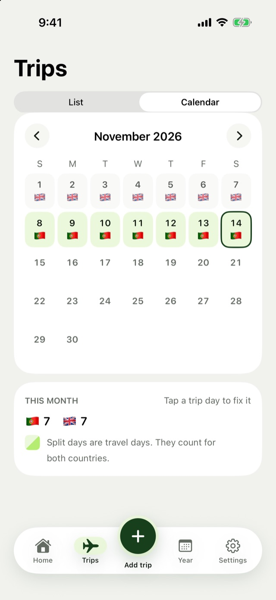

Know how many days you have left. In every country.
Stayly counts your days abroad, so you stay inside Schengen 90/180, the 183-day tax rule and any limit you set.
Why it's hard
Counting days in your head goes wrong fast.
Schengen looks back 180 days from every single day. Tax rules count the calendar year. Travel days count for two countries. One wrong guess can mean a fine, an entry ban or a tax bill.
Add your trips
A country and two dates. Or let Stayly note the country for you as you travel.
Pick your limits
Schengen, the 183-day rule, or your own, like "max 60 days in Portugal a year".
See what's left
Days used, days left, and the date you need to leave by. Updated every day.
Schengen 90/180
The answer, not the maths.
See exactly where you stand in your 180-day window, and plan your next trip with confidence.
- Days used and days left, today
- How long you can stay if you stay from today
- When days come back, and how many
Every limit
Tax rules and your own goals, side by side.
Stay under a limit, or make sure you reach one. Counted over the calendar year or any rolling window.
- The 183-day rule, for any country
- "At least" goals, like days needed for residency
- A clear status on every card: Safe, days left, or Over
Calendar
Every day of the year, accounted for.
A flag on every day. Days with no trip count as home, so your year always adds up.
- Tap any day to fix it
- Travel days count for both countries, the safe way
- Year totals per country, with PDF and CSV export for your accountant

And more
Set it up once. Stayly keeps count.
Automatic trackingPREMIUM
Stayly notes the country when you move far, using low-power location. No need to remember to log trips.
WarningsPREMIUM
A notification 5, 10 or 20 days before you reach a limit, and another if you go over.
PDF and CSV exportPREMIUM
A clean report of every day and country, ready for a visa application or your tax advisor.
Your private iCloud
Trips come back on a new iPhone or after a reinstall. Only you can see them.
Easy to fix
Edit a trip's country or dates in seconds. Swipe to delete.
Every country
Search any country by name. Flags everywhere, so you can read your year at a glance.
Pricing
Free to start. No trial tricks.
You only pay if you want Stayly to do the counting and warning for you.
Free
$0
Forever
- Add and fix trips by hand
- 1 counter, like Schengen 90/180
- Calendar and year view
- iCloud backup
Premium
$29.99
a year, or $4.99 a month. Cancel any time.
- Everything in Free
- All counters
- Automatic daily tracking
- Warnings before a limit
- PDF and CSV export
Private by design
Your travels are nobody's business.
The country is worked out on your iPhone. Your location never leaves it. There's no account to make and no server that holds your data.
Help
Questions, answered.
Can't find your answer? Email bilaldeveloper900@gmail.com. We usually reply within two working days.
How are days counted?
The day you arrive and the day you leave both count as full days. Days with no trip count as your home country, so every day of the year is counted somewhere.
What about travel days, when I'm in two countries?
For your counters, a travel day counts for both countries. That's the safe way for visa limits. In the Year view each day counts once, for the country you arrived in.
How does Schengen 90/180 work?
You can spend up to 90 days in any 180-day period across the 29 Schengen countries. Stayly looks back 180 days from today. It shows how many days you've used, the date the next day frees up, and how long you can stay if you stay from today.
A day is wrong. How do I fix it?
Go to Trips, then tap the trip to change its country or dates. Or open the Calendar and tap the day. Swipe left on a trip to delete it.
How does Automatic tracking work?
With Premium, Stayly notes which country you're in when you move far, using low-power location. The country is found on your iPhone and your location never leaves it. Allow location "Always" so it also works when Stayly is closed.
I'm not getting warnings.
Warnings are part of Premium, and they're tied to your counters: one arrives when a counter gets close to its limit. Check that notifications are on for Stayly in the iPhone Settings app, and that the counter is switched on in Stayly › Settings › Warnings.
How do I cancel Premium?
Open the iPhone Settings app, tap your name, then Subscriptions › Stayly › Cancel Subscription. You keep Premium until the end of the period you paid for.
I got a new iPhone. How do I get Premium back?
Open Stayly › Settings › Restore purchase, signed in with the same Apple Account.
Where is my data?
On your iPhone, and in your private iCloud if iCloud is on. Only you can see it. If you delete Stayly and install it again, your trips come back from iCloud within a minute. There's no account and no server.
Travel freely. Stayly keeps count.
Free to download. Premium when you want it.
Download on theApp Store Need help? Email bilaldeveloper900@gmail.com